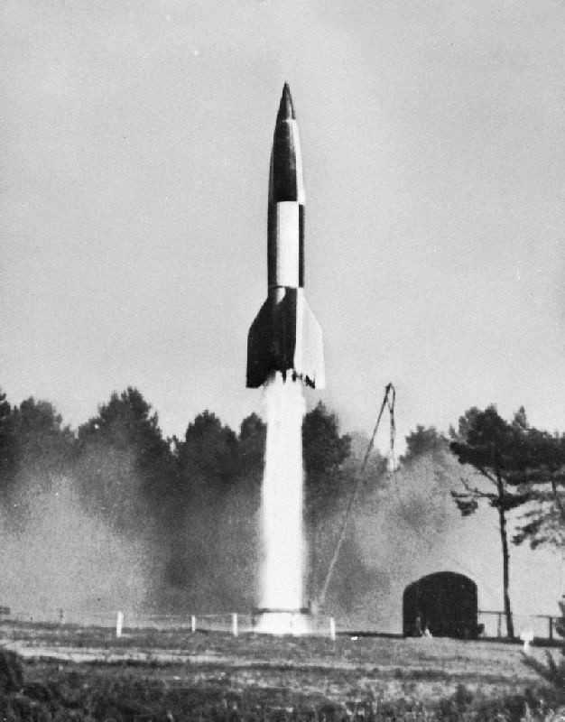
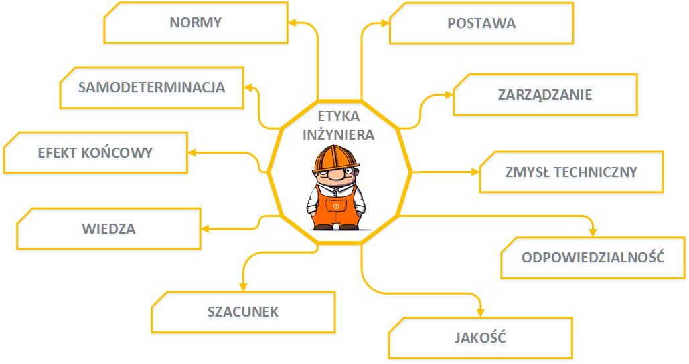
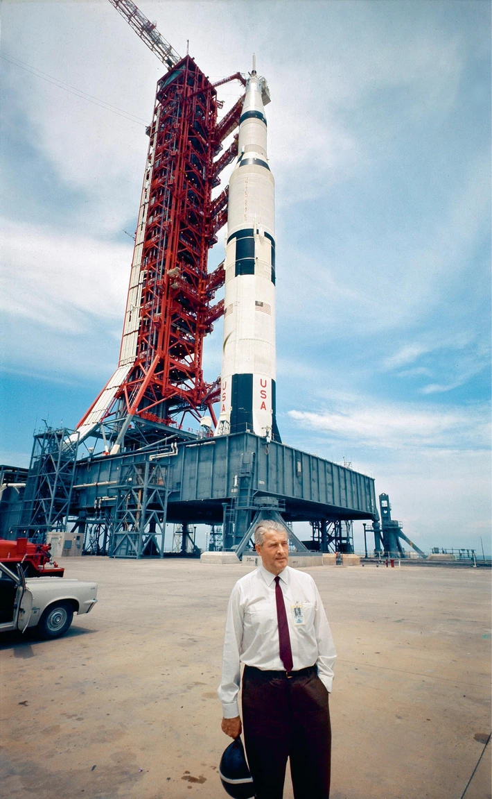
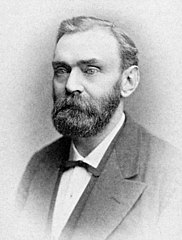
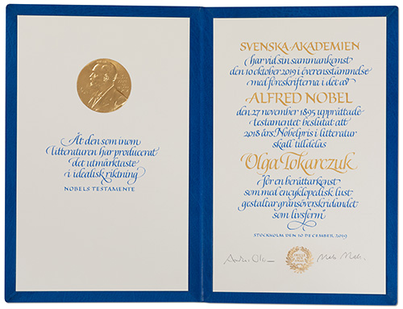

“Każda bez wyjątku nowa technologia ma awers korzyści i zarazem rewers nowych, nieznanych dotychczas bied.”
Stanisław Lem [Bomba megabitowa]
Etyka w pracy inżyniera
teoria i praktyka na kartach historii
Magdalena Kołodziejczak
Politechnika Wrocławska - Wrocław 2020
Dziś opowiem wam ...

Rakieta A-4 / V-2
Dynamit
Energia atomowa
Dziś opowiem wam ...
Rakieta A-4 / V-2
Dynamit
Ale wpierw trochę teorii
Kim jest inżynier?
„Inżynier w oparciu o swoje gruntowne wykształcenie i praktykę zawodową jest zdolny do stosowania metod naukowych i naukowego punktu widzenia, do analizy i rozwiązywania problemów technicznych. Jest [też] w stanie przyjąć odpowiedzialność za rozwijanie i stosowanie nauki i wiedzy inżynierskiej [...].”definicja określona przez Konferencję Przedstawicieli Stowarzyszeń Inżynierskich
Europy i Stanów Zjednoczonych” (EUSEC)
Etyka inżyniera
Etykę inżyniera można w skrócie opisać jako zbiór norm i reguł umożliwiający inżynierom
wewnętrzną samodeterminację działalności technicznej i pracy zawodowej.
Kodeks etyczny
- inżynier a środowisko
- inżynier a społeczeństwo
- inżynier a jego zleceniodawca/pracodawca
- stosunek inżyniera do zawodu
- lojalnośc i solidarność zawodowa
Celem działalności inżynierskiej jest stałe udoskonalanie warunków życia ludzi drogą
przetwarzania środowiska naturalnego, szanując przy tym jego wartości i szacunek do ludzkich potrzeb: życia, zdrowia, rozwoju
społecznego i indywidualnego.
Zobaczmy to na kartach historii
Rakieta A-4 / V-2
Po trupach do gwiazd
 Alfred Bernhard Nobel
Alfred Bernhard Nobel✯ 1912 ✝ 1977
- Niemiecki uczony, konstruktor rakiet
- Ukończył studia na Uniwersytecie Berlińskim, z tytułem doktora
- Od 1936 członek partii NSDAP
- W 1940 przyjęty do SS
- Testy rakiety A-4 zrobiły duże wrażenie na Adolfie Hitlerze
Bojowe użycie rakiety A-4 / V2
„Rakieta sprawdziła się znakomicie, poza tym, że wylądowała nie na tej planecie”Wernher von Braun
Lot na księżyc
Zabrał Amerykę na Księżyc, stał się bogaty i szanowany, a także spełnił wszystkie swoje dziecięce marzenia.

Konsekwencje decyzji
- Czy decyzje podejmowane przez inżyniera za młodu były zgodne z kodeksem moralnym?
- Czy Wernher von Braun zdołał spłacić swój dług względem społeczeństwa?
- Czy odkupienie win zdejmuje z człowieka odpowiedzialność za wyrządzone krzywdy?
Ostatnie lata życia upłynęły mu na tłumaczeniu się ze swojej wojennej przeszłości.
Dynamit
Twórca narzędzi śmierci - pacyfista?

Alfred Bernhard Nobel
✯ 1833 ✝ 1896
✯ 1833 ✝ 1896
- Urodzony w Sztokholmie
- Jego ojciec, inżynier i wynalazca, odniósł sukces przy produkcji materiałów wybuchowych i maszyn w Rosji (Sankt Petersburg)
- Wzbogacił się na eksploatacji pól naftowych rejonie Baku
- Zaczął ekperymentowac z materiałami wybuchowymi i 1862 otworzył fabrykę nitrogliceryny w której zginął jego młodszy brat
- Wynalazł m.in. detonator (1863) i dynamit (1867), zarejestrował 355 patentów
Pośmiertne wpsarcie,
czyli nagroda Nobla

Słowem podsumowania
Skutki odkryć inżyniera przez sam fakt
swojego powstania mogą radyklanie zmienić
świat i ingerować w życie wielu ludzi.
swojego powstania mogą radyklanie zmienić
świat i ingerować w życie wielu ludzi.
Źródła informacji oraz obrazków
- kodeks etyczny inżyniera - www.zgpzitb.org.pl/regulaminy/komitety/kodeks-etyczny/
- iautomatyka.pl/etyka-inzyniera/
- www.przeglad-techniczny.pl/
- www.rp.pl/artykul/368388-Niemiec-wygral-wyscig--w-kosmos-.html
- iconfinder.com
- www.newsweek.pl/wiedza/historia/rakieta-v2-i-program-kosmiczny-usa-dzielem-jednego-czlowieka/
- wikipedia.org
- Google Images
Pytania?